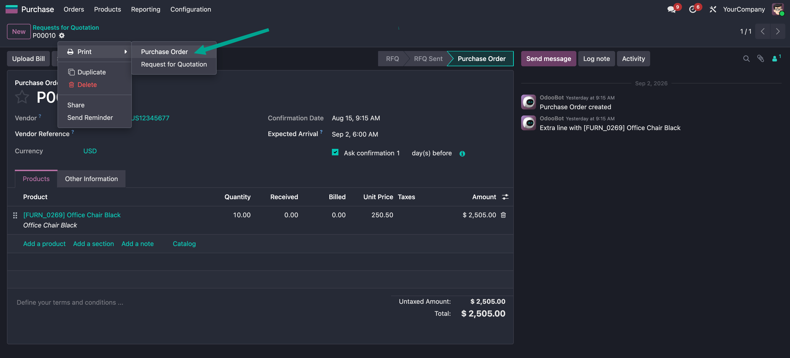
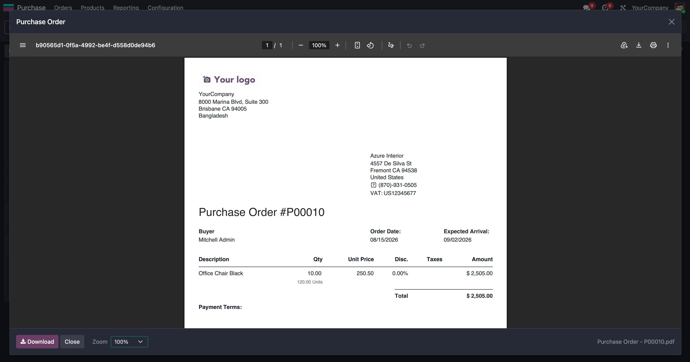
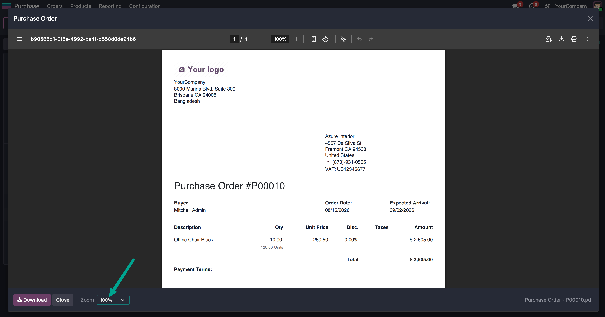

Never download the wrong report again. This module shows every PDF report in a full screen preview dialog before it is saved. The user reads the document, checks that it is the right one, and only then clicks Download.
It works for every qweb-pdf report already in your database -
Print menus, wizard buttons and server actions - with no change to your
existing reports and nothing to configure.
qweb-pdf report in the database.skip_pdf_preview: True in the action context.The Print menu, a wizard button or a server action - nothing changes for the user.

Read the whole document before anything is written to disk.

Fit width, Fit page or a fixed percentage. The choice is remembered for the next preview.

Some reports are printed dozens of times a day and do not need a preview.
Add skip_pdf_preview: True to the context of the action and that
report keeps the standard direct download.
<field name="context">{'skip_pdf_preview': True}</field>
ir.actions.report handlers registry, so it
intercepts reports without patching or overriding any core code./report/download and shown from a Blob URL.web only - installs on Community and Enterprise alike.